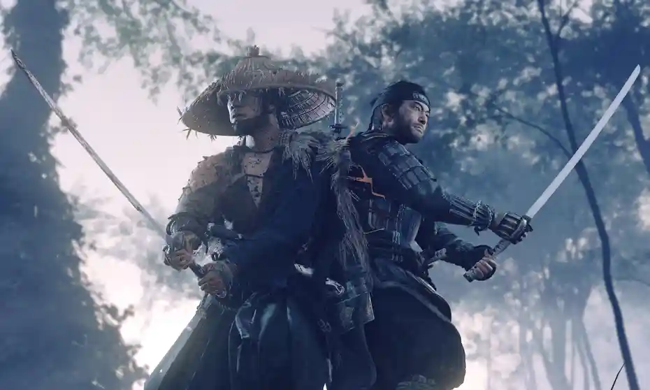

Ghost of Tsushima is an action-adventure game released in 2020 by Sony Interactive Entertainment and developed by Sucker Punch Productions. The player takes control of Jin Sakai, a samurai on a quest to protect Tsushima Island during the first Mongol invasion of Japan.
